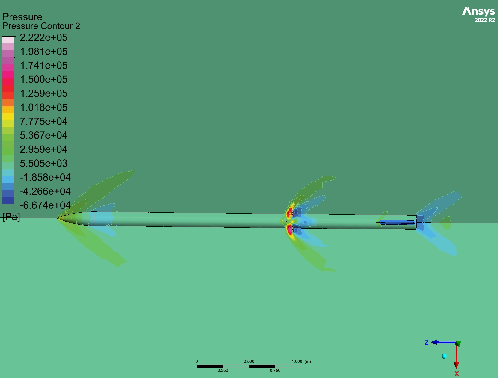

Airbrake loading
Deploying the plates exposes an upstream face to higher pressure and leaves lower pressure behind it. That pressure difference produces braking drag. I ran cases at different speeds and altitudes because dynamic pressure scales with air density and velocity squared; the same plate deployment can therefore produce very different loads during ascent.
I used the integrated drag results to compare deployment geometries and supply the deployment algorithm with data tied to the flight condition.

Looking beyond the plate
I included the rocket body and inspected the flow downstream of the deployed airbrakes. The pressure change reaches beyond the plate itself and affects the surrounding body, so an isolated flat-plate estimate would miss those interactions. I used the pressure contours to locate them and the solver’s integrated forces to quantify the resulting load.

Canard data for control
For the canards, I calculated lift coefficients and center-of-pressure locations across angles of attack. The coefficient describes the force response; the center of pressure determines where that force acts. Combined with the lever arm to the rocket’s center of gravity, those inputs let the control analysis calculate a moment. This also makes a geometry change that shifts the force application point visible in the data.